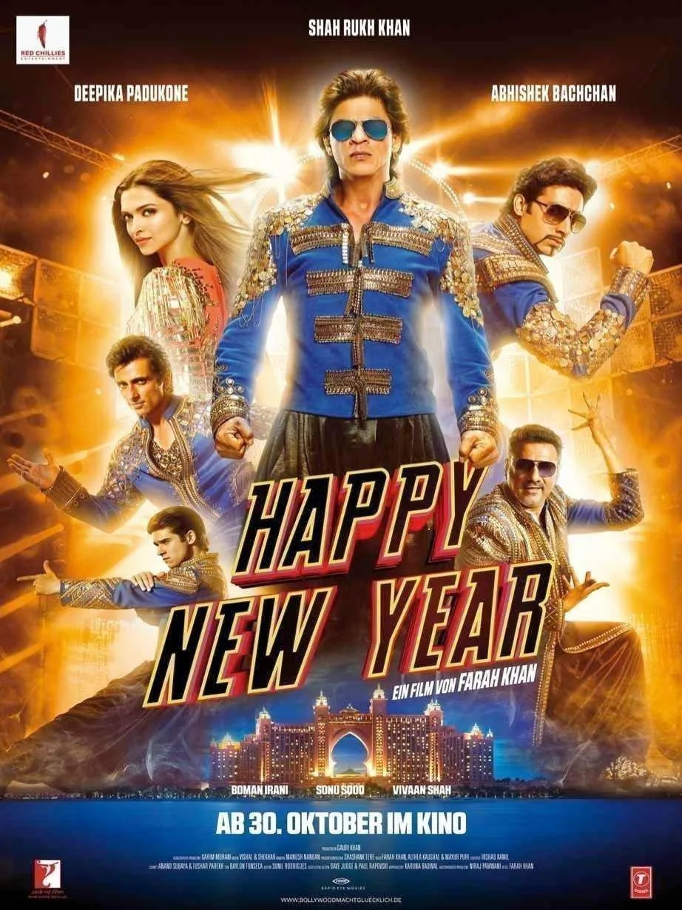
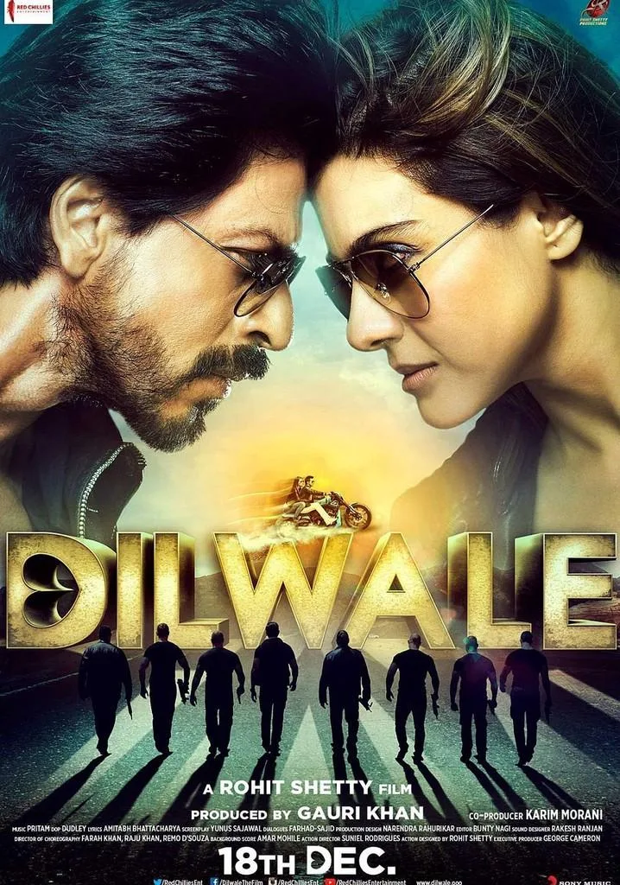
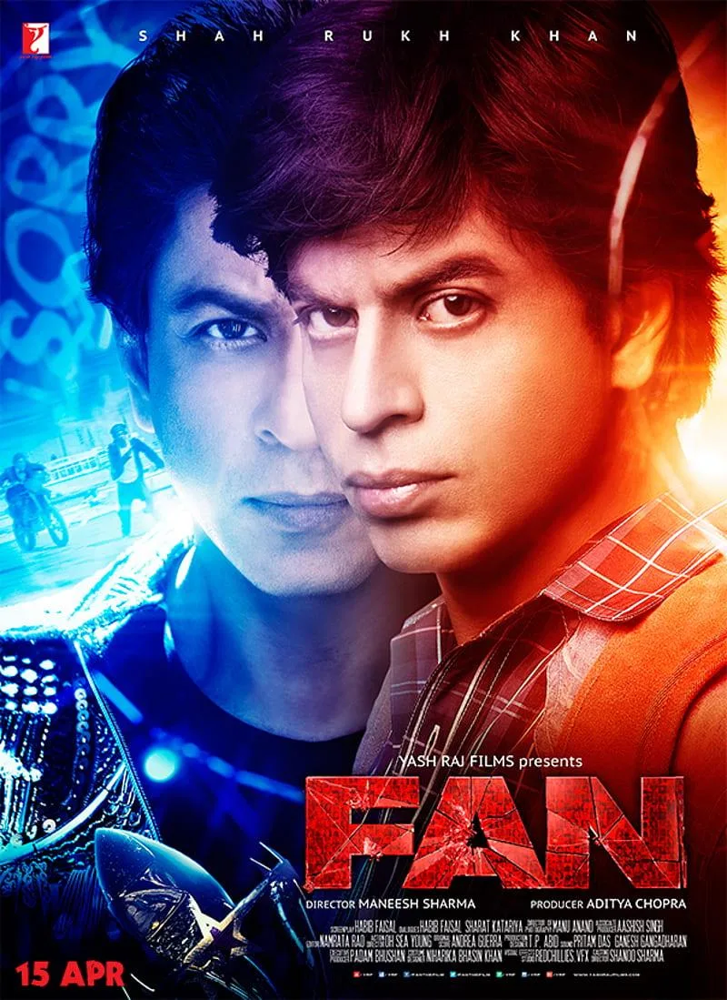

The Final Thesis · section 60 of 92
PART II — THE LULL
4. 2014–2018: The innovation gap



5
The word lull needs precision.
Shah Rukh Khan did not disappear from cinema between 2014 and 2018. His films continued to release, his brands continued to operate, and his public profile remained substantial.
The lull under investigation is narrower and more interesting: the apparent reduction in the visibility of the particular kind of integrated, technology-led campaign architecture documented for Ra.One and Chennai Express.
The evidence does not support a claim that digital marketing stopped. The question is whether its character changed.
The film-by-film record
| Year | Film | Worldwide gross estimate (₹ crore) |
|---|---|---|
| 2014 | Happy New Year | 383.10 |
| 2015 | Dilwale | 376.85 |
| 2016 | Fan | 182.33 |
| 2016 | Dear Zindagi | 135.47 |
| 2017 | Raees | 281.44 |
| 2017 | Jab Harry Met Sejal | 153.43 |
| 2018 | Zero | 185.99 |
Source: Bollywood Hungama worldwide collection listing. These are trade estimates, not audited receipts.

Bollywood Hungama
The numbers establish that this was a period of continued theatrical activity, not an absence of releases.
They also establish that the films had significantly different commercial outcomes.
What they do not establish is why the marketing approach may have changed.
Three competing explanations
The research should test at least three hypotheses.
Hypothesis A — The industry changed
The early experiments were built around a media environment in which social platforms, branded games, bespoke websites and character merchandise could provide differentiation. As platforms matured, digital promotion may have become more standardised and less visibly innovative.
Hypothesis B — The film slate changed
A superhero property such as Ra.One offers different opportunities for gaming, merchandise and character licensing than a relationship drama, psychological thriller or romantic comedy. Genre, audience, rights, budgets and production strategy affect the viability of an extended ecosystem.
Hypothesis C — Innovation moved behind the campaign
The absence of a publicly visible game or merchandise universe does not prove the absence of technology, analytics, platform strategy or audience research. Campaign records and production-side interviews are needed to establish whether the underlying capabilities changed.
The most compelling investigation would compare campaign duration, promotional spending, brand associations, digital products, social engagement, owned assets and fan participation across the films.
At present, the available evidence is considerably stronger for the early Ra.One and Chennai Express campaigns than for a comprehensive 2014–2018 campaign dataset.
That is a genuine research gap. It must not be filled with invented expenditure figures or unsupported claims about decisions made inside Red Chillies Entertainment.
The missed opportunity—or the unrecorded evolution?
Consider the possibilities.
Fan explored the relationship between a celebrity and his obsessive admirer. Raees built a world around a character, a region and a distinctive persona. Zero placed Shah Rukh Khan in a visually unusual, technically ambitious role.
Each property presented opportunities for digital extensions, fan-created narratives, interactive character experiences or games.
Whether those opportunities were considered, implemented, rejected or judged commercially unviable is not established by the box-office record.
The important question is not whether every film should have had a game.
It is whether a durable marketing capability survived from one release to the next.
If a studio invests heavily in creating a character universe, should the value of that investment expire when the film completes its theatrical run?
Could the audience relationships created for one film have become a reusable platform for the next?
That is the innovation gap this case study proposes to investigate.
5. The larger filmography: beyond the box-office chart
The graph above deliberately separates a comparable theatrical dataset from the broader filmography.
A complete study of Shah Rukh Khan's screen career must distinguish lead roles from supporting performances, guest appearances, cameos, voice performances and appearances as himself.
The Bollywood Hungama filmography includes, among other credits, Bhoothnath Returns (2014), Tubelight (2017), Ae Dil Hai Mushkil (2016), Brahmāstra: Part One – Shiva (2022), Laal Singh Chaddha (2022), Rocketry: The Nambi Effect (2022), Tiger 3 (2023), Mufasa: The Lion King (2024, English-language voice role), and The Zoya Factor (2019).
Bollywood Hungama
These credits matter to the marketing narrative because they represent different relationships between the star, the film and the audience.
A cameo may create attention disproportionate to screen time. A voice role may depend on a different promotional strategy. A guest appearance may be designed to support another film's universe rather than establish a Shah Rukh Khan-led property.
The final publication appendix should list all verified film credits with:
Original release date and title.
Character and type of appearance.
Language and version, where relevant.
India gross and worldwide gross, where comparable figures exist.
Source, source date and any disagreement between trade databases.
For films without a reliable comparable worldwide figure, the entry should read "not established in the selected dataset." It should not be assigned a zero or an estimated number merely to complete a chart.
This matters for the award submission: a complete filmography and a complete, comparable box-office series are two different research products.